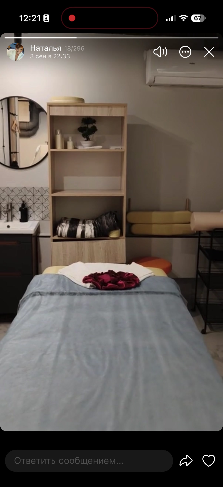
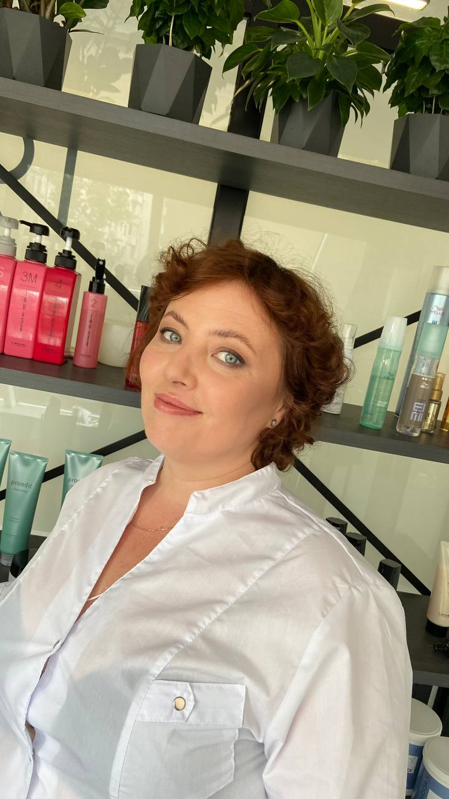

Комбинированный массаж
Классические, спортивные и лимфодренажные приёмы — с учётом ваших нагрузок, запроса и ощущений.
ИНДИВИДУАЛЬНЫЙ МАССАЖ · МОСКВА
Классический, спортивный и лимфодренажный массаж. Сочетаю техники под ваш запрос — сеанс за сеансом.
Базовый сеанс — 55 минут.
Первый сеанс — 5 700 ₽ вместо 7 800 ₽.

В здоровом теле —
здоровый дух.
Более 5 лет практики
Техники под ваш запрос
Курсовой подход
ДАВАЙТЕ ПОЗНАКОМИМСЯ

Наталья Кузнецова
Массаж и телесные практики
МОЙ ПОДХОД
Я Наталья. Более пяти лет работаю с телом. Для меня массаж — регулярная забота о себе: индивидуальная и последовательная работа, сеанс за сеансом.
В своей практике я делаю акцент на накопительном эффекте. Поэтому после первого знакомства предлагаю план встреч: мы возвращаемся к вашему запросу, обсуждаем изменения в самочувствии и корректируем техники и интенсивность.
Также преподаю техники ЦЗЫ-НЛО и индивидуально обучаю упражнениям Цигун. Содержание и темп занятий подбираю с учётом вашей подготовки и задач.
Сначала —
ваш запрос
В процессе —
обратная связь
После —
рекомендации для вас
ПРАКТИКИ И ОБУЧЕНИЕ
Чаще я выбираю комбинированный массаж: сочетаю приёмы в зависимости от того, что сейчас нужно вашему телу.
Классические, спортивные и лимфодренажные приёмы — с учётом ваших нагрузок, запроса и ощущений.
Точечная работа в сочетании с другими массажными приёмами.
Внимание к стопам как часть индивидуальной работы с телом.
Индивидуальное обучение упражнениям, движению и дыханию.
Освоение техник с учётом ваших задач и подготовки.
Тейпирование, формат обучения и его стоимость обсудим лично.
Стоимость массажаКАК Я РАБОТАЮ
Фрагменты моей практики:
спина, плечи, ноги и стопы.
Листайте, чтобы посмотреть другие видео
СТОИМОСТЬ
Базовый сеанс — 55 минут.
Длительность подберём под ваш запрос.
Познакомимся, обсудим ваш запрос и подберём техники. После сеанса вы получите индивидуальные рекомендации.
БАЗОВЫЙ ФОРМАТ · 55 МИНУТ
Стоимость зависит от объёма работы и выбранных техник. Если нужно больше времени, есть формат 85 минут и более длительные сеансы — до двух часов. Их стоимость согласуем отдельно.
ДЛЯ РЕГУЛЯРНЫХ ВСТРЕЧ
Количество встреч и стоимость курса определим после первого сеанса. Скидка действует от стоимости выбранных сеансов.
Индивидуальные предложения и акции на сеансы и абонементы появляются в историях Натальи. Посмотреть в Telegram
КАК ПРОХОДИТ ПЕРВАЯ ВСТРЕЧА
Первую встречу я называю диагностической: это время познакомиться с вашим запросом и выбрать подход к работе с телом.
О нагрузках, пожеланиях и особенностях, которые важно учесть перед массажем.
Обсудим интенсивность и будем ориентироваться на ваши ощущения во время сеанса.
Дам индивидуальные рекомендации. При желании обсудим курс и отдельное обучение упражнениям Цигун.
ОПЫТ И ОБУЧЕНИЕ
В 2022 году прошла профессиональную переподготовку в Институте массажа и косметологии по программе «Медицинский массаж в педиатрии».
СЛОВА КЛИЕНТОВ
Фрагменты отзывов о Наталье, оставленных во время её работы в студии KUSHETKA.
Наталья замечательно промяла мне стопы, работала над каждой точкой и даже использовала для этого присыпку.
Выслушала мои пожелания, сделала все именно так, как договорились и даже лучше.
Узнала много нового про особенности своего тела, очень хочу взять курс у Натальи!
Касательно самого массажа, чувствуется сильная и в то же время уверенная рука мастера со стажем.
ПЕРЕД ВИЗИТОМ
Начать можно с одного диагностического сеанса. Мой подход предполагает последовательную работу и наблюдение за изменениями от встречи к встрече. После знакомства обсудим, подойдёт ли вам курс. При покупке абонемента действует скидка 15%.
Базовый сеанс длится 55 минут. По запросу можно запланировать 85 минут, полтора или два часа. Длительность и стоимость продлённого сеанса согласуем заранее. Для занятий Цигун и обучения техникам ЦЗЫ-НЛО действуют отдельные условия.
Так я называю первую встречу: мы обсуждаем ваш запрос, подбираем техники и интенсивность массажа. Это название формата знакомства; медицинский диагноз на нём не ставится.
Да. Расскажите о своих предпочтениях перед сеансом и говорите, если во время массажа хочется изменить интенсивность.
Расскажите о поводе и сроках — например, о подготовке к свадьбе. Обсудим ваш запрос, объём работы, интенсивность и длительность сеанса.
МАССАЖ КАК ЧАСТЬ ВАШЕЙ ЖИЗНИ
Напишите мне в Telegram — обсудим ваш запрос
и подберём время для первой встречи.